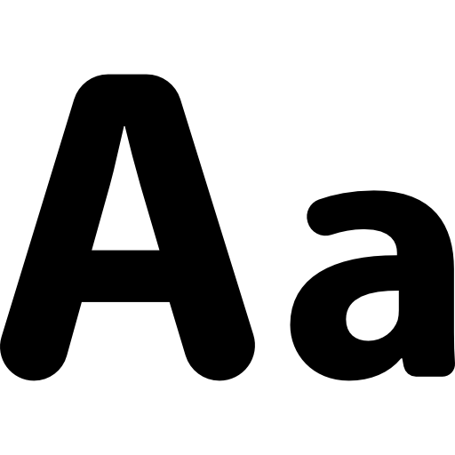

Tanggal Matematika adalah program yang berfungsi untuk mengetahui hari dari tanggal, mencari keunikan tanggal dalam matematika, dan mendaftarkan list tanggalnya.
Berbagai tanggal yang unik ini supaya terlihat lebih keren dan cantik. Kita bisa mencari tanggal-tanggal tersebut dari masa lalu hingga masa sekarang dan masa depan.
... [...] ...
Pengaturan

Tombol Keyboard:
- Enter = Selesaikan
- N = Buat soal baru